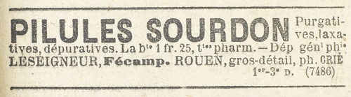

Jamais il n’avait eu l’occasion de voir bien en face cet homme, en général courbé sur le siège de la voiture, enfouissant sa tête entre les épaules, et dissimulant sa taille au point que Raoul le croyait presque bossu et malingre. Mais il connaissait son profil osseux qu’allongeait une barbe grisonnante, et il n’eut pas le moindre doute : c’était Léonard, le factotum et le bras droit de Joséphine Balsamo.
Il acheva de le ligoter, le bâillonna solidement, lui enveloppa la tête d’une serviette, et le traîna ensuite dans le boudoir, où il l’attacha aux pieds d’un lourd divan. Puis il s’en revint vers la jeune femme qui continuait à gémir.
– C’est fini, dit-il. Vous ne le verrez plus. Reposez-vous. Moi, je vais m’occuper de votre servante et savoir ce qu’elle est devenue.
De ce côté, il n’était pas inquiet, et, comme il le supposait, il découvrit Valentine au rez-de-chaussée, en un coin du salon, exactement dans le même état où il venait de laisser Léonard, c’est-à-dire réduite à l’impuissance et au silence. C’était une femme de tête. Une fois délivrée, et sachant son agresseur incapable de nuire, elle ne s’affola pas, et se conforma aux ordres de Raoul qui lui disait :
– Je suis un agent de la police secrète. J’ai sauvé votre maîtresse. Allez la rejoindre et soignez-la. Pour moi, je vais interroger cet homme et me rendre compte s’il n’a pas de complices.
Raoul la poussa dans l’escalier, avec la hâte de demeurer seul et de réfléchir aux idées confuses qui le harcelaient. Idées si pénibles que, par moments, il essayait presque de s’y soustraire et que, s’il avait écouté son instinct, laissant au hasard le soin de débrouiller la situation, il eût abandonné le champ de bataille et se serait enfui par la maison voisine.
Mais une vision trop nette des choses qu’il fallait faire s’établissait en lui pour qu’il n’y dût pas obéir. Toute sa volonté croissante de chef, qui sait se résoudre et garder son sang-froid dans les circonstances les plus tragiques, l’obligeait à l’action. Il traversa la cour, et d’un geste très lent manœuvra la serrure de la porte principale qu’il put ainsi entrebâiller légèrement.
Par la fente, il risqua un coup d’œil : de l’autre côté de la rue, un peu plus bas, la vieille berline stationnait.
Sur le siège, un domestique tout jeune, qu’il avait vu plusieurs fois avec Léonard et qui s’appelait Dominique, gardait le cheval.
Mais, à l’intérieur de la voiture, n’y avait-il pas un autre complice ? Et quel était ce complice ?
Raoul ne referma pas la porte. Ses soupçons se confirmaient, et maintenant rien au monde ne l’eût empêché d’aller jusqu’au bout. Il remonta donc au premier étage et s’inclina sur le prisonnier.
Un détail l’avait frappé, durant la lutte : un gros sifflet de bois retenu par une chaînette s’était échappé de l’une des poches de Léonard, et celui-ci, malgré le péril, l’avait rattrapé d’un mouvement machinal comme s’il eût craint de perdre cet instrument. Et la question se posait ainsi dans l’esprit de Raoul : le sifflet devait-il servir en cas de péril pour éloigner le complice ? Ou bien au contraire, était-ce un signal pour appeler le complice lorsque toute la besogne serait faite ?
Raoul adopta cette hypothèse, plus peut-être par intuition que par raisonnement. Il ouvrit donc la fenêtre, juste le temps nécessaire pour donner un coup de sifflet.
Et, posté derrière les rideaux de tulle, il attendit.
Son cœur sautait dans sa poitrine. Jamais encore il n’avait souffert de cette âpre et mauvaise souffrance. Au fond, il ne doutait pas de ce qui était sur le point d’advenir, et il connaissait la silhouette qui allait apparaître au cadre de la porte. Mais il voulait espérer quand même, contre toute évidence. Il n’admettait pas, il ne consentait pas à admettre que dans cette affaire ténébreuse, l’assassin Léonard eût comme complice…
Le lourd battant fut poussé.
– Ah ! fit Raoul avec désespoir.
Joséphine Balsamo entrait.
Elle entra paisiblement, avec autant de désinvolture que si elle rendait visite à une amie. Dès l’instant où Léonard avait sifflé, la voie était libre, et elle n’avait qu’à se présenter. Enveloppée de sa voilette, elle traversa légèrement la cour et pénétra dans la maison.
Du coup Raoul avait reconquis toute sa tranquillité. Son cœur se calma. Il était prêt à combattre ce deuxième adversaire, comme il avait combattu le premier, avec des armes différentes, mais tout aussi efficaces. Il appela Valentine à mi-voix et lui dit :
– Quoi qu’il arrive, pas un mot. Il y a contre Brigitte Rousselin un complot que je veux déjouer. Voici l’un des complices. Le silence absolu, n’est-ce pas ?
La servante proposa :
– Je peux aider, monsieur… courir chez le commissaire…
– À aucun prix. L’affaire, si elle était connue, risquerait de tourner mal pour votre maîtresse. Je réponds de tout, mais à condition qu’aucun bruit ne vienne de cette chambre, aucun.
– Bien, monsieur.
Raoul ferma les deux portes de communication. Ainsi la pièce où se trouvait Brigitte Rousselin et celle où la partie allait se jouer entre Josine et lui étaient nettement séparées. Comme il le désirait, aucun bruit ne pouvait passer de l’une à l’autre.
À ce moment, Joséphine Balsamo débouchait du palier. Elle le vit.
Et elle reconnut aux vêtements le corps ficelé de Léonard.
Raoul immédiatement eut la notion exacte de ce que Joséphine Balsamo pouvait, à certaines minutes graves, avoir d’empire sur elle-même. Loin de s’effarer en constatant la présence inattendue de Raoul et le désordre d’une pièce où Léonard était captif, elle commença par réfléchir, dominant ses nerfs de femme et l’agitation qui la secouait, et il était facile de comprendre qu’elle se demandait :
« Qu’est-ce que cela veut dire ? Que fait Raoul ici ? Qui donc a ligoté Léonard ? »
À la fin, retirant sa voilette, elle demanda simplement, car c’était là, en toute certitude, ce qui la tourmentait le plus :
– Pourquoi me regardes-tu ainsi, Raoul ?
Il mit un certain temps à lui répondre. Les mots qu’il allait prononcer étaient effrayants et il la dévisageait pour ne pas perdre un seul tressaillement de ses muscles ni un seul clignotement de ses yeux. Il murmura :
– Brigitte Rousselin a été assassinée.
– Brigitte Rousselin ?
– Oui, l’actrice d’hier soir, celle au bandeau de pierreries, et tu n’oseras pas dire que tu ne sais pas qui est cette femme, puisque tu es ici, chez elle, et puisque tu as chargé Léonard de t’avertir, aussitôt la besogne faite.
Elle parut bouleversée.
– Léonard ? Ce serait Léonard ?
– Oui, affirma-t-il. C’est lui qui a tué Brigitte. Je l’ai surpris qui la tenait au cou de ses deux mains.
Il la vit qui tremblait, et elle tomba assise en balbutiant :
– Ah ! le misérable !… Le misérable… est-il possible qu’il ait fait cela ?
Et, plus bas encore, avec une épouvante qui croissait à chaque mot :
– Il a tué… il a tué… Est-ce possible ! Il m’avait pourtant juré que jamais il ne tuerait… il me l’avait juré… Oh ! je ne veux pas croire…
Était-elle sincère, ou jouait-elle la comédie ? Léonard avait-il agi sous le coup d’une folie subite, ou d’après les instructions qui lui ordonnaient le crime quand la ruse échouait ? Questions redoutables que Raoul se posait sans pouvoir y répondre.
Joséphine Balsamo releva la tête, observa Raoul de ses yeux pleins de larmes, puis brusquement se jeta sur lui, les mains jointes.
– Raoul… Raoul… pourquoi me regardes-tu ainsi ? Non… non… n’est-ce pas ? Tu ne m’accuses pas ? Ah ! ce serait terrible… Tu pourrais croire que je savais ?… que j’ai commandé ou permis ce crime abominable ?… Non… Jure-moi que tu ne crois pas. Oh ! Raoul… mon Raoul…
Un peu brutalement, il la contraignit à s’asseoir. Ensuite il repoussa Léonard dans l’ombre. Et, après avoir fait quelques pas de long en large, il revint vers la Cagliostro et la saisit à l’épaule :
– Écoute-moi, Josine, prononça-t-il lentement, d’une voix qui était celle d’un accusateur, et même d’un adversaire beaucoup plus que d’un amant, écoute-moi. Si, d’ici une demi-heure, tu n’as pas fait la pleine clarté sur toute cette affaire, et sur les machinations secrètes qui la compliquent, j’agis envers toi comme envers une ennemie mortelle, de gré ou de force je t’éloigne de cette maison, et sans la moindre hésitation je vais dénoncer au plus proche commissariat de police le crime que ton complice Léonard vient de commettre sur la personne de Brigitte Rousselin… Après quoi, tu te débrouilleras. Veux-tu parler ?